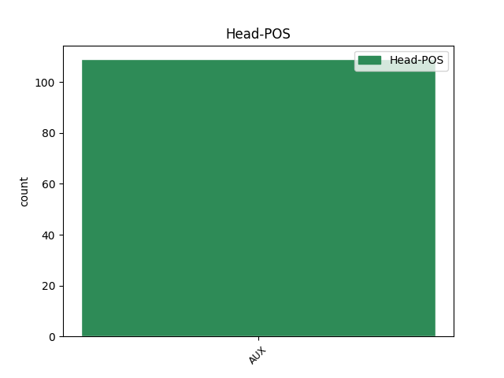

Distribution of features within this leaf


Agreement Rules sorted by frequency.
- When the dependent token is the direct object complements(comp:obj) of the head token, and the head token is VERB
1 ik _ _ _ _ 0 _ _ _
2 weet weten VERB WW|pv|tgw|ev Number=Sing|Tense=Pres|VerbForm=Fin 0 _ _ _
3 welk _ _ _ _ 0 _ _ _
4 ei _ _ _ _ 0 _ _ _
5 dat _ _ _ _ 0 _ _ _
6 is zijn AUX WW|pv|tgw|ev Number=Sing|Tense=Pres|VerbForm=Fin 2 comp:obj _ _
1 Hoe _ _ _ _ 0 _ _ _
2 noemt noemen VERB WW|pv|tgw|met-t Number=Sing|Tense=Pres|VerbForm=Fin 0 _ _ _
3 men _ _ _ _ 0 _ _ _
4 een _ _ _ _ 0 _ _ _
5 samenlevingsvorm _ _ _ _ 0 _ _ _
6 van _ _ _ _ 0 _ _ _
7 twee _ _ _ _ 0 _ _ _
8 personen _ _ _ _ 0 _ _ _
9 , _ _ _ _ 0 _ _ _
10 waarbij _ _ _ _ 0 _ _ _
11 de _ _ _ _ 0 _ _ _
12 partners _ _ _ _ 0 _ _ _
13 ieder _ _ _ _ 0 _ _ _
14 een _ _ _ _ 0 _ _ _
15 huishouding _ _ _ _ 0 _ _ _
16 voeren voeren VERB WW|pv|tgw|mv Number=Plur|Tense=Pres|VerbForm=Fin 2 mod _ SpaceAfter=No
17 ? _ _ _ _ 0 _ _ _
1 wie _ _ _ _ 0 _ _ _
2 op _ _ _ _ 0 _ _ _
3 tijd _ _ _ _ 0 _ _ _
4 is zijn AUX WW|pv|tgw|ev Number=Sing|Tense=Pres|VerbForm=Fin 8 subj _ _
5 en _ _ _ _ 0 _ _ _
6 wie _ _ _ _ 0 _ _ _
7 wil _ _ _ _ 0 _ _ _
8 mag mogen VERB WW|pv|tgw|ev Number=Sing|Tense=Pres|VerbForm=Fin 0 _ _ _
9 mee _ _ _ _ 0 _ _ _
10 naar _ _ _ _ 0 _ _ _
11 de _ _ _ _ 0 _ _ _
12 dierentuin _ _ _ _ 0 _ _ _
1 Ik _ _ _ _ 0 _ _ _
2 geloof geloven VERB WW|pv|tgw|ev Number=Sing|Tense=Pres|VerbForm=Fin 0 _ _ _
3 nog _ _ _ _ 0 _ _ _
4 steeds _ _ _ _ 0 _ _ _
5 in _ _ _ _ 0 _ _ _
6 wat _ _ _ _ 0 _ _ _
7 ik _ _ _ _ 0 _ _ _
8 gezegd _ _ _ _ 0 _ _ _
9 heb hebben AUX WW|pv|tgw|ev Number=Sing|Tense=Pres|VerbForm=Fin 2 udep _ _
1 In _ _ _ _ 0 _ _ _
2 zijn _ _ _ _ 0 _ _ _
3 tweede _ _ _ _ 0 _ _ _
4 strijkkwartet _ _ _ _ 0 _ _ _
5 laat laten VERB WW|pv|tgw|ev Number=Sing|Tense=Pres|VerbForm=Fin 0 _ _ _
6 vooral _ _ _ _ 0 _ _ _
7 het _ _ _ _ 0 _ _ _
8 opningsdeel _ _ _ _ 0 _ _ _
9 horen horen VERB WW|pv|tgw|mv Number=Plur|Tense=Pres|VerbForm=Fin 5 compound@prt _ _
10 hoe _ _ _ _ 0 _ _ _
11 deze _ _ _ _ 0 _ _ _
12 Engelse _ _ _ _ 0 _ _ _
13 componist _ _ _ _ 0 _ _ _
14 , _ _ _ _ 0 _ _ _
15 jaargang _ _ _ _ 0 _ _ _
16 1905 _ _ _ _ 0 _ _ _
17 , _ _ _ _ 0 _ _ _
18 zijn _ _ _ _ 0 _ _ _
19 eigen _ _ _ _ 0 _ _ _
20 weg _ _ _ _ 0 _ _ _
21 wil _ _ _ _ 0 _ _ _
22 gaan _ _ _ _ 0 _ _ _
23 . _ _ _ _ 0 _ _ _
1 Het _ _ _ _ 0 _ _ _
2 wordt _ _ _ _ 0 _ _ _
3 dan _ _ _ _ 0 _ _ _
4 vriendelijk _ _ _ _ 0 _ _ _
5 stil _ _ _ _ 0 _ _ _
6 , _ _ _ _ 0 _ _ _
7 want _ _ _ _ 0 _ _ _
8 niet _ _ _ _ 0 _ _ _
9 iedereen _ _ _ _ 0 _ _ _
10 in _ _ _ _ 0 _ _ _
11 Reims _ _ _ _ 0 _ _ _
12 weet _ _ _ _ 0 _ _ _
13 wat _ _ _ _ 0 _ _ _
14 een _ _ _ _ 0 _ _ _
15 Nederlander _ _ _ _ 0 _ _ _
16 is _ _ _ _ 0 _ _ _
17 , _ _ _ _ 0 _ _ _
18 laat laten VERB WW|pv|tgw|ev Number=Sing|Tense=Pres|VerbForm=Fin 23 cc _ _
19 staan _ _ _ _ 0 _ _ _
20 waar _ _ _ _ 0 _ _ _
21 hij _ _ _ _ 0 _ _ _
22 thuis _ _ _ _ 0 _ _ _
23 hoort horen VERB WW|pv|tgw|met-t Number=Sing|Tense=Pres|VerbForm=Fin 0 _ _ _
24 . _ _ _ _ 0 _ _ _
1 hij _ _ _ _ 0 _ _ _
2 kwam komen VERB WW|pv|verl|ev Number=Sing|Tense=Past|VerbForm=Fin 0 _ _ _
3 dronken drinken VERB WW|pv|verl|mv Number=Plur|Tense=Past|VerbForm=Fin 2 comp:pred _ _
4 thuis _ _ _ _ 0 _ _ _
5 . _ _ _ _ 0 _ _ _
Disagree Examples:
1 Hun _ _ _ _ 0 _ _ _
2 onenigheid _ _ _ _ 0 _ _ _
3 over _ _ _ _ 0 _ _ _
4 de _ _ _ _ 0 _ _ _
5 samenwerking _ _ _ _ 0 _ _ _
6 met _ _ _ _ 0 _ _ _
7 het _ _ _ _ 0 _ _ _
8 Joegoslavië-Tribunaal _ _ _ _ 0 _ _ _
9 maakte maken VERB WW|pv|verl|ev Number=Sing|Tense=Past|VerbForm=Fin 0 _ _ _
10 duidelijk _ _ _ _ 0 _ _ _
11 hoe _ _ _ _ 0 _ _ _
12 breekbaar _ _ _ _ 0 _ _ _
13 de _ _ _ _ 0 _ _ _
14 federatie _ _ _ _ 0 _ _ _
15 is zijn AUX WW|pv|tgw|ev Number=Sing|Tense=Pres|VerbForm=Fin 9 comp:obj _ SpaceAfter=No
16 . _ _ _ _ 0 _ _ _
1 Dank danken VERB WW|pv|tgw|ev Number=Sing|Tense=Pres|VerbForm=Fin 6 udep _ _
2 zij _ _ _ _ 0 _ _ _
3 een _ _ _ _ 0 _ _ _
4 beter _ _ _ _ 0 _ _ _
5 doelgemiddelde _ _ _ _ 0 _ _ _
6 verdrong verdringen VERB WW|pv|verl|ev Number=Sing|Tense=Past|VerbForm=Fin 0 _ _ _
7 Derby _ _ _ _ 0 _ _ _
8 Country _ _ _ _ 0 _ _ _
9 , _ _ _ _ 0 _ _ _
10 dat _ _ _ _ 0 _ _ _
11 gelijk _ _ _ _ 0 _ _ _
12 speelde _ _ _ _ 0 _ _ _
13 ( _ _ _ _ 0 _ _ _
14 2-2 _ _ _ _ 0 _ _ _
15 ) _ _ _ _ 0 _ _ _
16 bij _ _ _ _ 0 _ _ _
17 Chelsea _ _ _ _ 0 _ _ _
18 , _ _ _ _ 0 _ _ _
19 Liverpool _ _ _ _ 0 _ _ _
20 van _ _ _ _ 0 _ _ _
21 de _ _ _ _ 0 _ _ _
22 tweede _ _ _ _ 0 _ _ _
23 plaats _ _ _ _ 0 _ _ _
24 . _ _ _ _ 0 _ _ _
1 Waar _ _ _ _ 0 _ _ _
2 normaal _ _ _ _ 0 _ _ _
3 de _ _ _ _ 0 _ _ _
4 glazen _ _ _ _ 0 _ _ _
5 van _ _ _ _ 0 _ _ _
6 haar _ _ _ _ 0 _ _ _
7 enorme _ _ _ _ 0 _ _ _
8 zonnebril _ _ _ _ 0 _ _ _
9 zouden zullen AUX WW|pv|verl|mv Number=Plur|Tense=Past|VerbForm=Fin 13 mod _ _
10 moeten _ _ _ _ 0 _ _ _
11 zitten _ _ _ _ 0 _ _ _
12 , _ _ _ _ 0 _ _ _
13 draagt dragen VERB WW|pv|tgw|met-t Number=Sing|Tense=Pres|VerbForm=Fin 0 _ _ _
14 ze _ _ _ _ 0 _ _ _
15 kakelbont _ _ _ _ 0 _ _ _
16 gekleurde _ _ _ _ 0 _ _ _
17 plastic _ _ _ _ 0 _ _ _
18 oogleden _ _ _ _ 0 _ _ _
19 waaraan _ _ _ _ 0 _ _ _
20 centimeters _ _ _ _ 0 _ _ _
21 lange _ _ _ _ 0 _ _ _
22 wimpers _ _ _ _ 0 _ _ _
23 kleven _ _ _ _ 0 _ _ _
24 . _ _ _ _ 0 _ _ _
1 Op _ _ _ _ 0 _ _ _
2 het _ _ _ _ 0 _ _ _
3 laatst _ _ _ _ 0 _ _ _
4 hoorden horen VERB WW|pv|verl|mv Number=Plur|Tense=Past|VerbForm=Fin 0 _ _ _
5 we _ _ _ _ 0 _ _ _
6 ze _ _ _ _ 0 _ _ _
7 gewoon _ _ _ _ 0 _ _ _
8 boven _ _ _ _ 0 _ _ _
9 de _ _ _ _ 0 _ _ _
10 televisie _ _ _ _ 0 _ _ _
11 uit _ _ _ _ 0 _ _ _
12 , _ _ _ _ 0 _ _ _
13 hoe _ _ _ _ 0 _ _ _
14 hard _ _ _ _ 0 _ _ _
15 we _ _ _ _ 0 _ _ _
16 dat _ _ _ _ 0 _ _ _
17 ding _ _ _ _ 0 _ _ _
18 ook _ _ _ _ 0 _ _ _
19 aanzetten aanzetten VERB WW|pv|tgw|mv Number=Plur|Tense=Pres|VerbForm=Fin 4 mod _ SpaceAfter=No
20 . _ _ _ _ 0 _ _ _
1 Het _ _ _ _ 0 _ _ _
2 werd worden VERB WW|pv|verl|ev Number=Sing|Tense=Past|VerbForm=Fin 0 _ _ _
3 een _ _ _ _ 0 _ _ _
4 1- _ _ _ _ 0 _ _ _
5 1 _ _ _ _ 0 _ _ _
6 gelijkspel _ _ _ _ 0 _ _ _
7 , _ _ _ _ 0 _ _ _
8 wat _ _ _ _ 0 _ _ _
9 genoeg _ _ _ _ 0 _ _ _
10 is zijn AUX WW|pv|tgw|ev Number=Sing|Tense=Pres|VerbForm=Fin 2 mod _ _
11 voor _ _ _ _ 0 _ _ _
12 Newcastle _ _ _ _ 0 _ _ _
13 om _ _ _ _ 0 _ _ _
14 zich _ _ _ _ 0 _ _ _
15 te _ _ _ _ 0 _ _ _
16 plaatsen _ _ _ _ 0 _ _ _
17 voor _ _ _ _ 0 _ _ _
18 de _ _ _ _ 0 _ _ _
19 kwartfinales _ _ _ _ 0 _ _ _
20 . _ _ _ _ 0 _ _ _